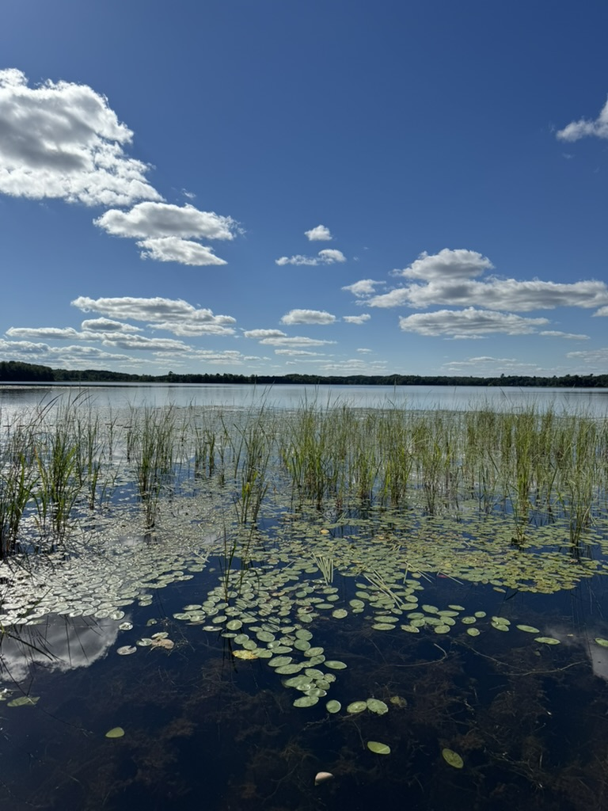

Hi, my name is Jack. I'm a computer science student at the University of Minnesota Duluth, graduating May 2027. I'm best reached via email.
I spend most of my time figuring out how things work — whether that's diving into someone's codebase, taking apart an idea to see what's underneath, or building something from scratch just to understand every piece of it.
Right now I'm working on an AI desktop app in Rust and React that watches your screen, runs OCR, and answers questions in under a second. I'm also actively looking for a summer 2026 internship where I can contribute real work from day one.
A photo I took on the 4th of July.